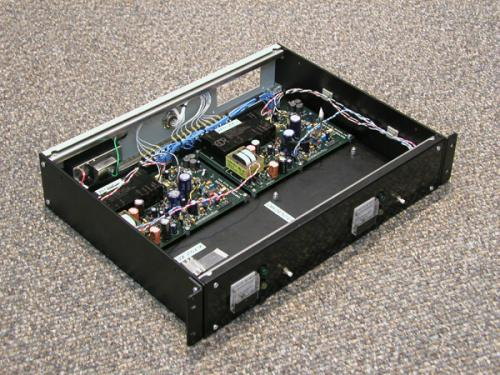

|
Ground Based Projects
ARRO: the development of an Autonomous
Real-time Remote Observatory capable of
accomodating a wide variety of
instruments in polar climates
Antarctic Wind Farm: the testing of
small-scale, commercial micro-turbines
at the South Pole as part of the ARRO
ELF-ULF: measuring ELF and ULF waves with
instruments located at the (1)South
Pole and (2)McMurdo Stations in
Antarctica, (3)Iqaluit, Nunavut and
(4)Sondrestrom, Greenland
Rockets and Imaging
Cascades: a sounding rocket experiment to
investigate motions and structure of
electron precipitation and electric fields
in pre-midnight poleward edge discrete
aurora
SERSIO: Svalbard EISCAT Study of Ion
Outflows--a sounding rocket experiment
to investigate ion outflows in the polar
cusp using EISCAT Svalbard Radar
DERBI: the aurora imager to be flown on
the sounding rockets of the SERSIO
and Cascades campaigns to gather
information important to auroral physics
and our understanding of the aurora
ePOP: Enhanced Polar Outflow Probe--
testing and calibrating two imagers for
this space environment micro-satellite
designed to explore plasma and
atmospheric escape processes in the polar
ionosphere and upper atmosphere
|
|
The Magnetosphere-Ionosphere Reasearch Laboratory (MIRL) at Thayer School of Engineering, Dartmouth College contributes to a variety of research projects in space physics. The lab primarily focuses on the development instrumentation for ground based and rocket and satellite observations of space physics phenomena, in addition to analyses and theoretical work. |

Contact information:
Marc R. Lessard
(marc.r.lessard@dartmouth.edu)
Thayer School of Engineering - 8000 Cummings Hall - Hanover, NH 03755 - (603)646-2608
|